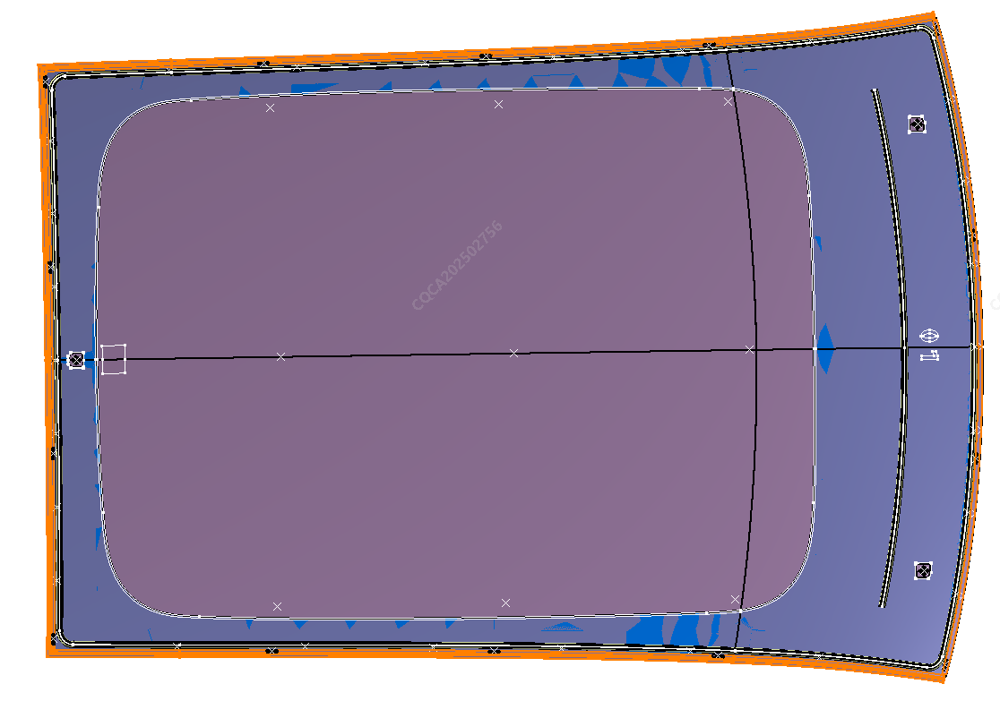
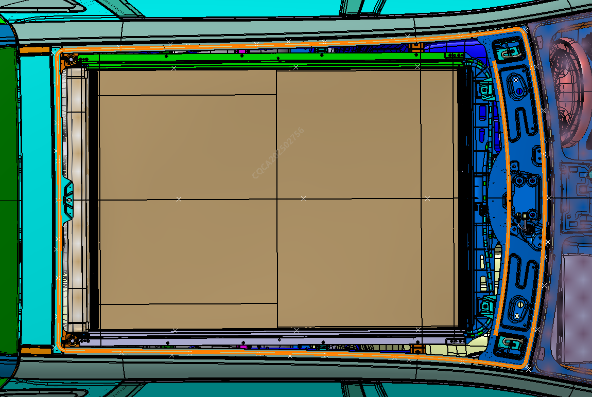
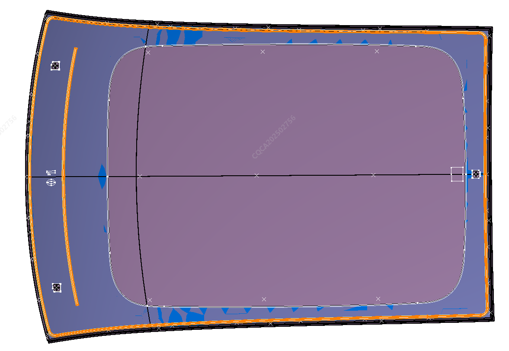
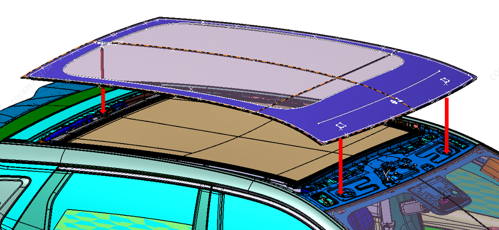

Снятие
1. По возможности оторвать окантовочный молдинг по периметру стекла крыши;

2. См. метод снятия ветрового стекла для разрезания автомобильного клея по траектории штриховой линии на рисунке ниже, затем снять стекло крыши сверху через крышу.

1. Удалить остатки автомобильного клея с кузова (белого кузова); если в процессе демонтажа лакокрасочное покрытие или листовой металл кузова были повреждены, необходимо восстановить лакокрасочное покрытие или металл на поврежденном участке;
2. Взять новое стекло крыши, обратиться к методу установки ветрового стекла и нанести новый клей по траектории штриховой линии, как показано на рисунке ниже, после чего установить стекло крыши сверху вниз через крышу;

3. В процессе установки убедиться в совмещении установочных штифтов на стекле крыши с установочными отверстиями на кузове, совмещение установочных штифтов стекла крыши показано на рисунке ниже;

4. После опускания стекла крыши на кузов подтолкнуть стекло крыши для оптимизации зазоров с кузовом, прижать стекло крыши по периметру в местах нанесения клея для обеспечения плотного прилегания.
5. После завершения установки проверить герметичность, например проверить дождеванием, во время проверки обратить внимание на защитную обработку салона
Внимание: 1. Траектория нанесения нового клея должна строго соответствовать траектории нанесения оригинального клея на автомобиле, смещение наружу или внутрь кузова не должно превышать 2 mm (включительно) во избежание протечек воды в автомобиль; 2. После установки стекла крыши на кузов необходимо придавить зону нанесения клея на стекле сверху вниз до упора, в противном случае могут возникнуть такие проблемы, как протечки воды в автомобиль и неправильное сопряжение с окружающими деталями.